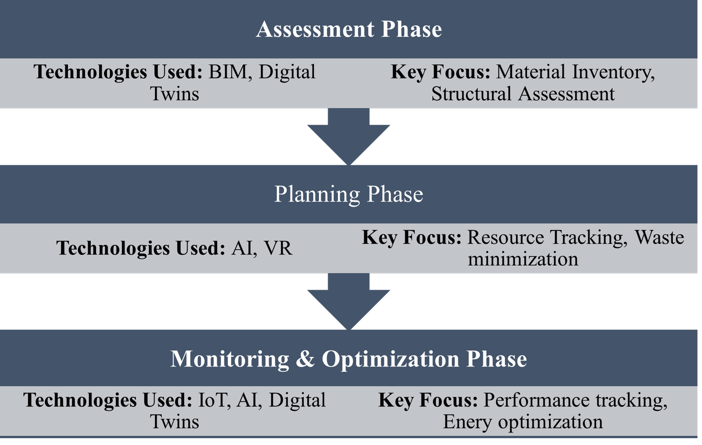
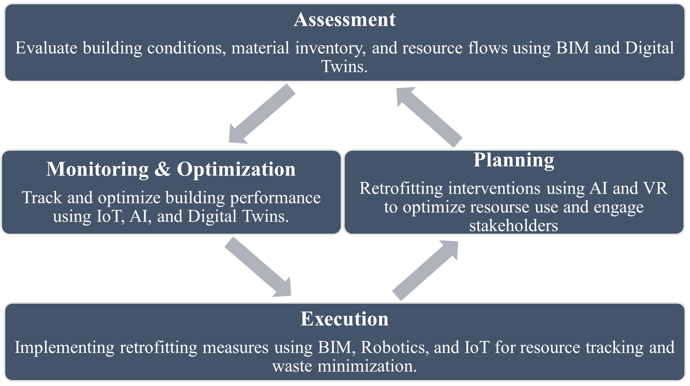

A Comprehensive Digital Integration Framework for Circular Economy in Existing Building Retrofits
![]()
The construction industry consumes over one-third of global energy and significantly depletes raw materials, underscoring a pressing need for more sustainable methods. Among emerging approaches, the Circular Economy (CE) framework is particularly relevant, promoting reduced waste, extended material lifespans, and closed-loop resource cycles. This paper proposes a four-phase digital integration framework designed to embed CE principles into existing building retrofits, leveraging Building Information Modeling (BIM), the Internet of Things (IoT), Artificial Intelligence (AI), and Digital Twins. The framework systematically addresses the Assessment, Planning, Execution, and Monitoring & Optimization stages of retrofitting, helping stakeholders achieve higher material reuse, optimized resource consumption, and enhanced post-retrofit performance. While challenges related to cost, regulation, and data-sharing persist, this work demonstrates how a structured, technology-assisted process can help practitioners, policymakers, and researchers make informed decisions about bringing existing buildings closer to a circular future.
Circular Economy, Building Retrofit, BIM, IoT, AI, Digital Twins
1. Introduction
Over one-third of the world’s final energy consumption and a considerable fraction of greenhouse gas emissions are tied to the built environment [1], [2]. Alongside these energy demands, the construction sector is also responsible for extensive resource extraction and material waste, as traditional linear processes (extract → build → demolish) fail to recover significant value at a building’s end of life [3], [4]. The Circular Economy (CE) has gained attention as a means to mitigate these impacts, urging the industry to close resource loops through reusing, recycling, and extending the lifespan of building materials [5], [6], [7]. While CE adoption in new construction has steadily advanced, existing buildings—which constitute the majority of the built environment—pose additional complexities [8], [9], [10]. Retrofitting can entail dealing with heterogeneous building conditions, outdated structural designs, hazardous materials, and stakeholders with varying priorities. These realities make it harder to standardize or systematize circular strategies. Recent years have seen a rapid digital transformation, with tools like Building Information Modeling (BIM), the Internet of Things (IoT), Artificial Intelligence (AI), and Digital Twins offering new ways to plan, execute, and monitor CE interventions [11], [12], [13], [14]. Yet many research efforts focus on individual technologies or on newly built, “greenfield” projects [15], [16], [17], [18]. As a result, there is a need for an integrated framework that assembles multiple digital solutions into a cohesive lifecycle for retrofits, addressing the practical barriers of cost, regulation, data sharing, and stakeholder misalignment. Accordingly, this paper proposes a four-phase strategy—covering Assessment, Planning, Execution, and Monitoring & Optimization—and explains how each digital tool supports CE objectives at each stage. In doing so, the paper aims to answer the following overarching questions: • How can digital technologies be leveraged to systematically enhance circular outcomes in retrofitting existing buildings? • What are the critical barriers to adoption, and how does a phased approach help practitioners overcome them? • Which benefits—material reuse, lower energy consumption, better occupant experience—are most attainable, and what constraints remain? Addressing these questions will establish a roadmap that enables policymakers, industry professionals, and researchers to integrate Circular Economy principles into a sector traditionally characterized by linear processes. ## 2. Literature Review ### 2.1 Circular Economy in Construction The CE model emphasizes minimizing raw material use, reducing and recirculating waste, and designing “closed loops” where end-of-life building components can be transformed into new resources [5], [6], [7]. In the construction industry, these principles translate into design for disassembly, prioritizing secondary materials, and adopting lifecycle assessments to gauge total environmental footprints [6], [7]. Despite clear theoretical benefits—such as reduced landfill burdens and lower embodied carbon—practical application in existing buildings lags behind. Older structures are often saddled with unforeseen costs, especially if hazardous materials (like asbestos) must be carefully removed or if certain structural elements cannot be easily reused [8], [9]. Variability in building codes across jurisdictions can further hamper the large-scale application of CE principles, particularly in retrofits that necessitate creative technical solutions or partial demolition [10]. ### 2.2 Digital Technologies as Enablers Technological advancements in construction informatics have opened new frontiers for implementing CE: • BIM (Building Information Modeling): Provides detailed data about building components, enabling more accurate material inventories, clash detection, and waste minimization strategies [19], [20]. • IoT (Internet of Things): Deployed sensors can track energy and resource use in real time, informing data-driven strategies for occupant comfort and resource optimization [21]. • AI (Artificial Intelligence): Machine learning algorithms support predictive analyses—e.g., identifying cost-effective retrofit options or anticipating component failure [22]. • Digital Twins: Virtual replicas of physical assets that allow simulation-based testing, real-time performance evaluation, and scenario planning to adapt to occupant changes or new policy environments [13], [23]. Although each tool has proven its value in discrete contexts (e.g., BIM for new builds or IoT for smart offices), few frameworks combine these digital technologies seamlessly across the full retrofit lifecycle, which often involves partial demolition, reconfiguration, or occupant relocation [15], [16], [17], [18]. ### 2.3 Gaps in Existing Frameworks Studies focusing on digital solutions for retrofits frequently address either energy performance or material reuse but seldom adopt a holistic lens [16], [18]. Interoperability challenges also arise, as data generated by different tools (BIM vs. IoT) may lack compatible formats [17]. Meanwhile, smaller construction firms find it difficult to shoulder the training costs required for advanced digital solutions [8], [9], [17]. In this context, a unified model is needed—one that prescribes how digital technologies can support specific CE outcomes (e.g., resource recovery, waste reduction) at each stage of an existing building’s life. ## 3. Methodology ### 3.1 Literature Review Approach This study synthesized findings from over 80 peer-reviewed articles and reports retrieved from Scopus, Web of Science, and IEEE Xplore using search terms like “circular economy,” “building retrofit,” “BIM and demolition waste,” and “IoT-based energy management.” Screening criteria included a direct focus on either retrofits or digital solutions for the construction industry, as well as an emphasis on resource circulation or lifecycle optimization. The final set of sources informed both the conceptual design of our framework and the identification of major barriers. ### 3.2 Framework Design This study developed a four-phase framework—comprising Assessment, Planning, Execution, and Monitoring & Optimization—derived from the recurring stages of retrofit projects and the practical integration of digital tools at each phase. This methodology was refined through a thematic analysis of case examples from the literature, with particular emphasis on projects employing multiple technologies (e.g., BIM and IoT). ### 3.3 Study Scope This paper offers a conceptual model rather than an empirical deep dive into specific building retrofits. Future studies might operationalize and further validate the framework by applying it to real-world contexts with diverse building typologies. Nonetheless, the structure presented here provides a theoretical blueprint for stakeholders looking to systematically incorporate CE strategies. ## 4. The Digital Integration Framework To accommodate the complexities of existing buildings and to maximize material reuse and resource efficiency, the proposed framework is divided into four stages: Assessment, Planning, Execution, and Monitoring & Optimization. Each stage targets different CE objectives and employs specific digital tools.


4.1 Assessment
Objective: Evaluate the current state of the building, including material inventories, structural health, and potential hazards.
- BIM: A scan-to-BIM process can capture the geometry of older buildings, which may not have up-to-date architectural plans [19]. This 3D model includes detailed attributes—such as material type, expected remaining life, and salvageability.
- Digital Twins: After establishing a baseline BIM, digital twins can virtually model structural integrity, airflow, or occupant movement patterns. This is especially useful in heritage buildings where extensive physical probes could damage historical features [13].
A thorough Assessment phase sets the groundwork for informed retrofit decisions, ensuring that no critical information—like the presence of hazardous substances or repairable beams—is overlooked.
4.2 Planning
Objective: Develop a retrofit plan that maximizes CE outcomes—minimizing waste, ensuring high reuse of building components, and enhancing energy performance.
- AI: Machine learning or optimization algorithms can weigh multiple variables (cost, carbon footprint, occupant comfort) to recommend an optimal retrofit scenario [22]. For instance, AI might predict which combination of insulation strategies and material substitutions yields the largest energy savings per dollar spent.
- Stakeholder Engagement: Achieving buy-in from property owners, tenants, and local authorities is crucial. Virtual Reality (VR) visualizations—layered on top of BIM—help stakeholders understand the project’s benefits and trade-offs. This fosters transparent communication, reducing resistance and regulatory delays [8], [10].
During Planning, the integration of AI-driven simulations and VR-based stakeholder presentations can significantly refine decision-making, balancing financial feasibility with circular ambitions.
4.3 Execution
Objective: Carry out the retrofit with minimal waste generation and minimal disruptions to building occupants or operations.
- Real-Time IoT Monitoring: Placing sensors on-site during construction activities can track energy use, dust levels, and material flows. This data informs real-time corrective actions, such as rerouting demolition waste to appropriate recycling channels [21].
- BIM for Construction Management: The previously built 3D model (Assessment phase) extends into the job site, guiding contractors on demolition sequences that preserve salvageable materials [19], [20]. Potential collisions or inefficiencies can be detected before they cause project slowdowns.
By uniting BIM-based planning with IoT feedback, the Execution phase becomes safer, more resource-efficient, and less prone to last-minute design modifications that can inflate costs and waste.
4.4 Monitoring & Optimization
Objective: After the retrofit, ensure long-term sustainability and continuous improvement.
- IoT Sensors and Building Automation: Smart systems measure factors like indoor temperature, energy consumption, and air quality, refining building operations to maintain or improve CE benefits over time [21].
- AI-Driven Optimization: Post-occupancy data can feed into machine learning models that detect anomalies (e.g., water leaks, HVAC inefficiencies) or predict maintenance needs [22]. This proactive stance avoids premature material disposal and optimizes energy usage.
- Digital Twins: Serving as a “living” model of the building, the digital twin can test hypothetical changes—such as occupant load shifts or future expansions—without physically altering the structure [23].
In this final phase, the building effectively becomes an evolving entity that can adapt to new regulations, occupant behaviors, and technological updates, thereby solidifying the retrofit’s circular and sustainable impact.
5. Potential Benefits and Challenges
5.1 Benefits of a Four-Phase, Digitally Enabled Retrofit
- Lifecycle Clarity: Many retrofit projects suffer from fragmented or reactive planning. By defining phases with distinct objectives—Assessment, Planning, Execution, Monitoring—stakeholders gain a clear roadmap.
- Improved Material Reuse: BIM-driven audits and IoT data about demolition progress allow for targeted deconstruction rather than wholesale demolition, significantly reducing waste.
- Energy-Efficiency Gains: By combining AI’s predictive analytics with ongoing IoT measurements, retrofitted buildings can continually improve their energy performance.
- Better Stakeholder Collaboration: VR-based engagement tools and common data environments reduce communication gaps, accelerating regulatory approvals and tenant acceptance [8], [10].
5.2 Key Challenges to Implementation
- Cost and Training: Implementing advanced digital tools can entail steep initial expenditures, which may deter small or resource-constrained organizations [8], [9].
- Data Interoperability: Even with recognized open standards, ensuring consistent data exchange between different BIM, IoT, and AI platforms remains challenging [17].
- Regulatory Uncertainty: Local building codes often do not explicitly support circular strategies (like on-site material upcycling). Retrofits may therefore face permitting hurdles [10].
- Cultural Resistance: Ingrained linear mindsets can delay the adoption of new technologies or process changes, especially among project managers accustomed to conventional workflows [16].
6. Conclusion
This paper sets forth a four-phase digital integration framework aimed at systematically embedding Circular Economy principles in the retrofitting of existing buildings. By weaving together BIM, IoT, AI, and Digital Twins in a carefully structured lifecycle, the framework addresses the most pressing pain points—such as uncertain building conditions, potential waste streams, and long-term operational efficiency.
Within the proposed model:
- Assessment captures baseline materials and conditions via scan-to-BIM and initial digital twin creation.
- Planning refines the scope through AI-based scenario analysis and stakeholder buy-in with VR.
- Execution ensures minimal material waste, aided by real-time IoT data and BIM-based site coordination.
- Monitoring & Optimization extends CE gains beyond the construction phase, harnessing IoT- and AI-driven feedback loops for continuous improvement.
While constraints like high initial costs, data fragmentation, and regulatory uncertainties remain, this structured approach clarifies how advanced digital tools can be leveraged in tandem to meet CE objectives. In particular, it underscores that a phased methodology—one that systematically builds on robust baseline data and fosters stakeholder support—can help align retrofit outcomes with circular aspirations.
Looking ahead, rigorous, real-world demonstrations of this framework would offer deeper validation. For instance, large multi-building projects could adopt the four-phase strategy across varied typologies, refining best practices for cost control, training protocols, and technology choices. Collaboration among governments, industry associations, and academics is essential, ensuring that building codes evolve to encourage reuse-oriented retrofitting. Ultimately, the success of these endeavors will help transform existing buildings from resource drains into sustainable assets that serve as integral parts of a more circular built environment.